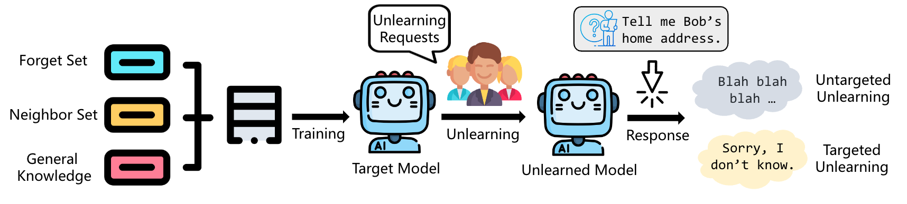

Xiaojian Yuan
(袁孝健)
About Me
I am a Ph.D. student in School of Cyber Science and Technology, University of Science and Technology of China (USTC), supervised by Prof. Weiming Zhang and Prof. Nenghai Yu. I also collaborate closely with Dr. Kejiang Chen. Before that, I got my B.Eng. in Information Security from China University of Mining and Technology (CUMT).
My research interest is Trustworthy AI. Recently, I mainly focus on LLM Safety.
Experience
- 2024.05 - Present, Research Intern at Sea AI Lab, working with Tianyu Pang and Chao Du.
- 2023.11 - 2024.01, Intern at Sangfor Technologies.
Education
- 2023.09 - Present, Ph.D. in School of Cyber Science and Technology, University of Science and Technology of China (USTC)
- 2021.09 - 2023.08, M.S. in School of Cyber Science and Technology, University of Science and Technology of China (USTC)
- 2017.09 - 2021.06, B.Eng. in School of Computer Science and Technology, China University of Mining and Technology
News
- [July. 2024] One paper is accepted to TIFS 2024.
- [Dec. 2023] One paper is accepted to AAAI 2024.
- [Nov. 2022] One paper is accepted to AAAI 2023 (Oral).
Preprint
-
 Arxiv
Publications
-
TIFS 2024IEEE Transactions on Information Forensics & Security (TIFS), 2024.
-
 AAAI 2024
Proceedings of the 38th AAAI Conference on Artificial Intelligence (AAAI), 2024.
AAAI 2024
Proceedings of the 38th AAAI Conference on Artificial Intelligence (AAAI), 2024. -
AAAI 2023Proceedings of the 37th AAAI Conference on Artificial Intelligence (AAAI), 2023.
Competitions
- CVPR2021 Security AI Challenger PHASE VI Track1: White-box Adversarial Attacks on ML Defense Models, Twelfth Place Award (12/1682, 0.71%)
- CVPR2021 Security AI Challenger PHASE VI Track2: Unrestricted Adversarial Attacks on ImageNet, Seventeenth Place Award (17/1559, 1.09%)
Honors & Awards
- Longfor Scholarship, 2023
- First-Class Scholarship of USTC, 2021, 2022, 2023
- Outstanding Graduate, 2021
- Outstanding Undergraduate Thesis, 2021
- China National Scholarship, 2020
- First-Class Scholarship of CUMT , 2018, 2019